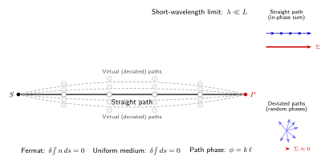

光为什么按直线传播?
打开一支手电筒, 让光束掠过空气里飘浮的尘埃, 你会看到一条笔直的亮带. 把一只手伸到阳光下, 投在地面上的影子边缘锋利得可以当尺用. 这种"光走直线"的印象如此根深蒂固, 以至于"光"和"直线"几乎成了同义词 —— 我们说"视线", 意思就是一条看不见的直线; 我们说"光明正大", 言下之意就是路径没有弯折, 一览无余.
可是细想一下, 事情并不那么理所当然. 光是一种波, 水波会绕过石头, 声波会拐进门缝, 为什么光波不会? 为什么光不能像水波那样, 从手电筒这里"漫"到桌子底下去? 更要命的是, 如果你把光视作微粒, 直线当然天经地义 —— 可我们接下来会看到, 直线传播恰恰是波动图像给出的结论, 而不是粒子图像的专利. 这一节就来把这件事彻底理清: 光走直线, 究竟是一条独立的公理, 还是可以从更基本的原理推出来的定理?
回答这个问题, 要回到一条令人惊讶的早期原理 —— 1662 年费马 (Pierre de Fermat) 提出的光学最短 (更精确地说, 极值) 时间原理. 我们会发现, 所有"光走直线"的日常现象, 都是这条原理在均匀介质这一特殊情形下的自动推论; 而它更深的根, 则要到惠更斯的子波叠加里去找.
一、费马原理: 光程取极值
费马原理的现代陈述, 是说在折射率为 $n(\mathbf r)$ 的介质里, 光从点 $A$ 走到点 $B$, 走的不是随便哪条曲线, 而是使"光学路径 (光程)"取极值的那一条:
$$ \delta\!\int_{A}^{B} n(\mathbf r)\, ds = 0. \tag{1} $$
这里 $ds$ 是路径的弧长微元, $n\,ds$ 是几何长度按介质折射率加权后的"光学长度". 记号 $\delta$ 表示对路径做小变分: 所有通过 $A,B$ 两点的邻近路径里, 真实光走的那一条使这个积分取极值 (通常是极小, 在凹反射镜这种特殊构型里也可能是极大或鞍点, 所以更准确的说法是"稳定点"). 这就是"光知道要走最快路径"的几何化表达.
在均匀介质里, $n$ 是常数, 可以提到积分号外, 于是 (1) 式退化为
$$ \delta\!\int_{A}^{B} ds = 0. \tag{2} $$
几何里我们早就知道, 两点之间弧长最短的曲线是直线 —— 这正是欧几里得几何最早的命题之一. 所以 (2) 式的唯一解就是连接 $A,B$ 的那条欧几里得线段. 这就是"光走直线"的费马式证明: 不是光有什么神秘的"直行本能", 而是在均匀介质里, 极值化光程这一要求, 数学上只允许直线. 换一种介质, 比如地表附近温度分层的空气, $n(\mathbf r)$ 不再是常数, (1) 式的极值曲线就不再是直线 —— 于是我们看到沙漠上的海市蜃楼, 或夏天柏油路面上的镜面幻影. 这反过来验证: 直线并不特殊, 它只是均匀介质的巧合.
值得一提的是, 费马当年用这条原理做的第一件事, 不是重证直线传播 —— 那太平凡 —— 而是推导斯涅尔折射定律. 他和笛卡尔就折射定律的"物理解释"激烈争论: 笛卡尔认为光在密介质里更快, 费马凭"最短时间"这一信念认为光在密介质里更慢, 最后用变分法一算, 费马胜出. 这条原理后来被莱布尼茨、拉格朗日、哈密顿反复咀嚼, 慢慢演化成整个分析力学的最小作用量原理. 也就是说, 今天我们写出的粒子拉格朗日力学、哈密顿正则方程, 其胚胎就躺在这条看似只管光的原理里.
二、惠更斯子波与稳定相位
费马原理给出了"结论", 但还没解释"为什么". 为什么光偏偏要让光程取极值? 为什么不是别的泛函? 要回答这个"为什么", 得从光的波动性入手. 这里要用到惠更斯 (Christiaan Huygens) 1678 年提出的子波原理, 以及现代物理里把它数学化的"稳定相位近似" (stationary-phase approximation).
惠更斯的图像是: 波前上的每一点, 都可以视为新的点源, 向前方发出球面子波; 下一时刻的新波前, 就是所有子波的包络. 这原本只是几何作图规则, 但如果把每个子波写成带相位的复数振幅, 并把所有可能的"路径"加起来, 它就变成一个严肃的数学断言 —— 这正是后来费曼路径积分思想的前身.
设从源点 $S$ 发出频率 $\omega$ 的单色光, 在 $P$ 点探测. 按子波叠加, $P$ 点的总场可以写成对所有连接 $S,P$ 的路径求和, 每条路径贡献一个相位因子 $e^{i\phi}$, 其中相位 $\phi = k\cdot\ell$, $k = 2\pi/\lambda$ 是波数, $\ell$ 是路径几何长度 (均匀介质中). 也就是说, $P$ 点的总场形如
$$ E(P) \sim \int [\text{路径}]\ e^{\,i k \ell[\text{路径}]}. $$
现在做一个思想实验. 想象我们挑一条路径, 然后把它稍微"晃动"一下 —— 改变它中间某一点的位置 —— 看相位 $\phi = k\ell$ 怎么变. 如果这条路径本身不是直线, 那么稍稍挪动它, 几何长度 $\ell$ 会一阶地改变 (比如把一条折线的中间顶点往侧边推一点, 两段合起来的长度会明显改变), 于是相邻路径之间相位差很大. 大量这种路径的贡献相互抵消, 就像一大把彼此方向随机的小箭头加起来几乎抵消为零. 只有在直线路径附近, 情况不同: 长度 $\ell$ 对路径形状的一阶导数为零, 微小晃动只引起二阶的长度变化, 于是相邻路径相位几乎一致, 小箭头方向同一, 矢量和达到最大.
这就是"稳定相位"的物理: 在短波长极限下, 对波幅的路径积分被那些 $\delta\ell = 0$ 的路径主导 —— 这正是费马原理 (2) 式. 换句话说, 费马原理不是一条独立假设, 它是波动图像的鞍点近似. 光之所以"走直线", 是因为所有其他路径的贡献干涉相消了, 剩下唯一一条不被相消的路径, 就是直线.

三、短波长极限与衍射的尺度
稳定相位论证里关键的前提是"短波长". 到底要多短才算短? 我们来具体算一算. 考虑一条比直线多出一小段弯折的路径, 其弓起高度为 $h$, 两端基线长度为 $L$. 几何上, 这条弯折路径比直线多出约 $\Delta\ell \sim h^2/L$ (这是两点之间弧形与直线长度差的二阶估计). 要让这条路径还能和直线路径相干叠加而不被相消, 就要求相位差 $k\Delta\ell \lesssim \pi$, 也就是
$$ \frac{h^2}{L} \lesssim \frac{\lambda}{2}, \quad\Rightarrow\quad h \lesssim \sqrt{\lambda L / 2}. \tag{3} $$
(3) 式告诉我们的不是一条路径, 而是一个"有效路径束"的横向宽度 —— 这就是菲涅耳所说的"第一菲涅耳带"的半径. 现在代数字. 可见光中心波长取 $\lambda = 500\,\text{nm} = 5\times 10^{-7}\,\text{m}$. 桌面实验尺度 $L = 1\,\text{m}$, 代入 (3) 式:
$$ h \lesssim \sqrt{5\times 10^{-7}\cdot 1 / 2} \approx \sqrt{2.5\times 10^{-7}}\,\text{m} \approx 5\times 10^{-4}\,\text{m} = 0.5\,\text{mm}. $$
也就是说, 对于长度 1 米的光路, 贡献干涉的"路径束"直径在亚毫米级. 这解释了为什么用手电筒打出的光束边缘肉眼看上去是直的 —— 相对于整个光束的厘米尺度, 0.5 毫米的横向"模糊"几乎可以忽略. 再算一个对比量: 装置横向尺度 $\sim 1\,\text{cm}$, 则 $\lambda/L \sim 5\times 10^{-5}$, 这就是所谓"短波长极限的小参数"的数量级. 如此之小, 难怪几何光学在日常尺度上准到令人发指.
再做一个极限检验. 让 $\lambda$ 趋于零, (3) 式给出 $h\to 0$: 路径束收缩成一条无限细的直线, 这正是严格的几何光学. 反之, 让 $L$ 趋近于 $\lambda$ (比如把光路换成微米级的小孔), (3) 式给出 $h\sim \lambda$, 也就是路径束横向扩展到整个孔径量级 —— 这时衍射再也藏不住, 光束一过小孔立刻扇开, 成为经典的单缝衍射图样. 这是我们熟悉的"小孔成像/衍射"判据 $\lambda/L$: 只要它不是小量, 几何光学的"光走直线"就必须让位给波动光学.
一个具体的反例足以加深印象: 把一束可见光射向 $10\,\mu\text{m}$ 宽的狭缝, $\lambda/L \approx 0.05$, 第一极小的衍射角 $\theta \approx \lambda/L \approx 3^\circ$. 在屏上出现的亮斑宽度明显大于狭缝 —— 光不再走"直线"了. 反过来把这束光放进米级光路里, $\lambda/L\sim 10^{-7}$, 偏离直线的角度完全淹没在装置误差里. 费马原理的"胜利"在日常尺度上如此彻底, 以至于中学课本可以心安理得地把它当公理.
四、从"光走直线"到变分力学: 一则历史伏笔
把这一节作为全书第一节, 还有一个更深的用意 —— 它把我们以后要反复用到的"原理式思考"先交代清楚. 费马写下 $\delta\int n\,ds = 0$ 时并不知道, 这条原理会在一个半世纪后孕育出整个现代物理的骨架. 故事大致是这样的.
1744 年, 莫培督 (Maupertuis) 受费马原理启发, 提出"最小作用量原理"用于力学, 写成 $\delta\int p\,dq = 0$ 的形式. 1788 年, 拉格朗日 (Lagrange) 在《分析力学》中把它推到极致, 引入广义坐标和拉格朗日函数 $L = T - V$, 导出著名的欧拉-拉格朗日方程. 1834 年, 哈密顿 (W. R. Hamilton) 发现力学和光学在数学上竟是同一件事: 他把力学的作用量写成
$$ S = \int L\,dt, \qquad \delta S = 0, $$
与光学的 $\delta\int n\,ds = 0$ 完全类比, 并据此建立"光学-力学类比" —— 这个类比后来被薛定谔在 1926 年发现量子波动方程时当作明灯: 既然粒子有"作用量-相位"的对应, 那么粒子就应当像光一样有波. 沿着这条思路, 他写出了薛定谔方程, 把费马的"光走极值路径"一路推到了电子和原子.
所以, 回头再看"光为什么走直线"这个问题, 我们得到的不是一个孤立答案, 而是一扇门. 门这一侧是日常经验: 阳光下的影子, 手电筒的光束; 门那一侧通向几何光学、变分法、经典力学、波动力学, 乃至路径积分. 这本小书此后会反复推开这扇门, 每一次都借用到它的一小块. 而这一切, 都始于费马在 1662 年的一封信里写下"自然界按最经济的方式行事"这句话.
顺便说一句自问自答式的收束. 为什么费马原理这样简洁的陈述能够统摄如此广阔的现象? 这是因为波动的"相位"本质上就是作用量 $S/\hbar$ 的经典近似; 稳定相位点在任何波动理论里都自动浮现, 成为"经典路径". 光走直线只是其中最平凡的一个实例 —— 平凡到你我从小就知道, 却直到学过波动和变分才第一次真正理解.
小结
"光走直线"不是一条公理, 而是一条定理. 它来自费马原理 $\delta\int n\,ds = 0$ 在均匀介质下的退化, 而费马原理本身又是波动光学在短波长极限下由稳定相位选出的主导贡献. 对可见光与厘米尺度装置, $\lambda/L\sim 10^{-5}$ 远远小于 1, 直线图像精度极高; 把尺度压到 $10\,\mu\text{m}$, 衍射立刻浮现. 这回答了全书要追问的第一个"光是什么": 光至少是一种可以干涉、可以相消的波; 它"直线"地跑到你眼中, 只是因为所有弯路都在背后悄悄地抵消掉了. 下一节我们将接着追问: 这条波在遇到界面时会怎么办? —— 这就把我们引向折射定律和第二节.
▲